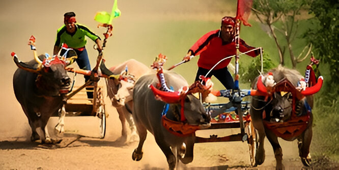
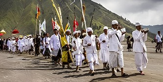
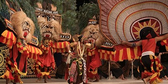

Yadnya Kasada
Upacara adat rakyat Tengger di kanan Gunung Bromo.
Baca
"Kita mungkin memiliki agama yang berbeda, bahasa yang berbeda, warna kulit yang berbeda, tetapi kita semua berasal dari satu ras manusia."
Pertunjukan Reog Ponorogo benar-benar megah! Topeng singa barongnya bikin merinding sekaligus kagum sama kekuatan para penarinya
Karapan sapi itu unik banget, bukan hanya lomba cepat sapi tapi juga pesta rakyat yang penuh semangat dan kebersamaan.
Artikel tentang Yadnya Kasada ini menarik sekali, saya jadi lebih paham bagaimana masyarakat Tengger menjaga tradisi dengan penuh rasa syukur di Gunung Bromo.
Tulisan ini membuka wawasan saya, ternyata Tari Beskalan punya nilai budaya yang tinggi dan masih sering digunakan untuk menyambut tamu kehormatan di Malang.


